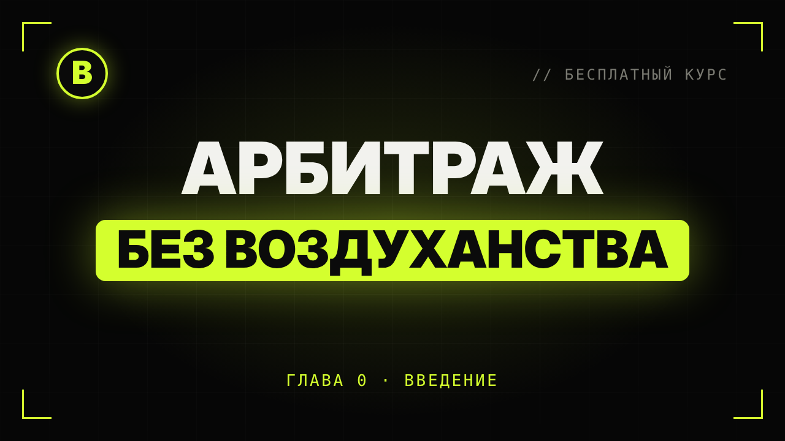

Введение

Арбитраж — это форма заработка, которая подходит стрессоустойчивым. Здесь будут и слитые бюджеты, и баны, и недели без результата. Если после этого вы всё равно хотите продолжать, вам сюда.
Примеры я буду приводить на гембле — это вертикаль, в которой я работал сам.
С чего начать
На старте все сталкиваются с одним и тем же вопросом: «А что делать?»
Сразу скажу честно: без вложений заработать не получится.
Как начинал я
Самый простой путь — сходить на конференции. Их много, например Conversion Conf и Affhub. Там полно HR-ов и команд, которые ищут людей к себе.
В идеале сразу попасть в сильную команду. Я начинал с маленькой: в штате было до 30 человек.
Как читать этот курс
Новичкам: читайте основной текст глав. Опытным: ищите блок «Глубже» в конце каждой главы.
Глубже: так выглядит этот блок
В таких блоках будут цифры, нюансы и разборы для тех, кто уже в теме. Новичок может смело пропускать.
Новые главы выходят в канале. Подпишись, чтобы не пропустить.
Подписаться на «Воздухан»